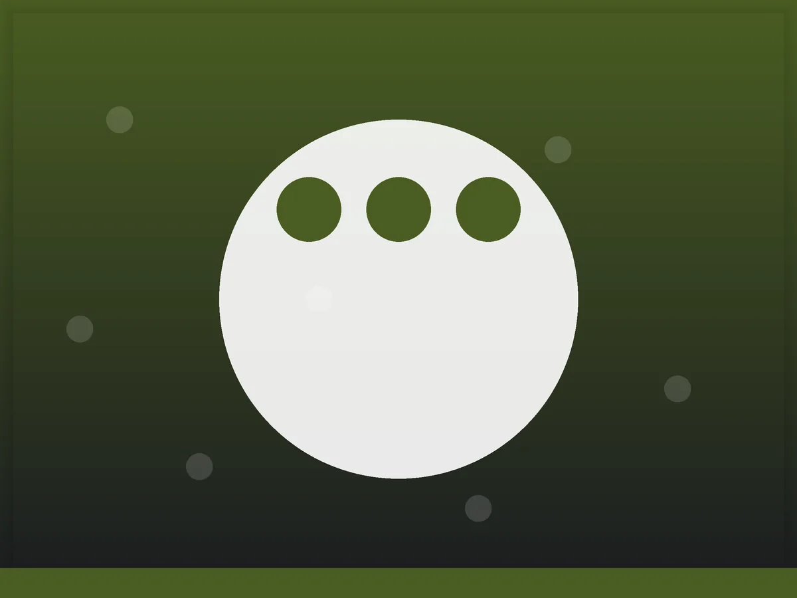
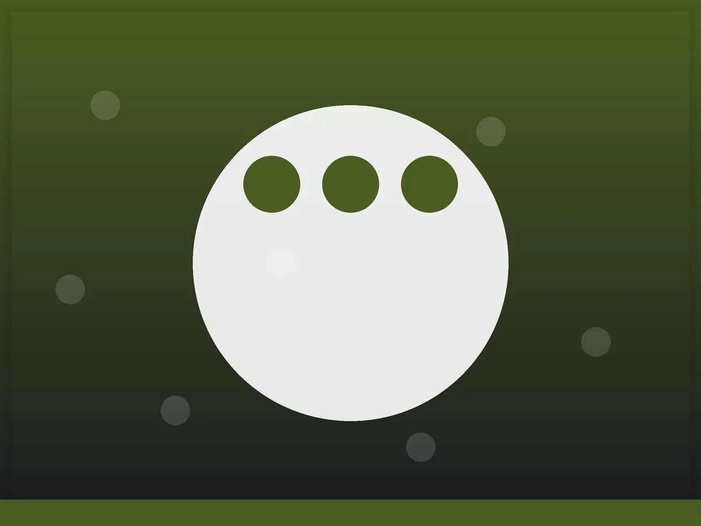

Our Craft
View Full Menu
Fresh Sashimi

Signature Nigiri

Hand-rolled Maki
Experience authentic Edomae sushi prepared by master chefs using the freshest fish flown in daily from Tsukiji market.
Book Omakase Experience

At Zoca, we believe that true perfection lies in simplicity. Our approach to sushi is rooted in the traditional Edomae style, where the quality of the ingredients speaks for itself.
Chef Kenji sources only the most pristine seasonal catches, applying precise aging techniques to unlock deep, umami-rich flavors that melt on the palate.